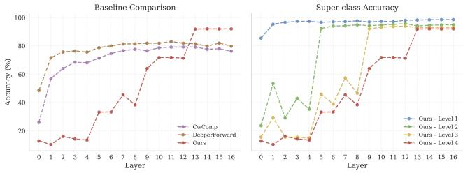

Figureure 1 · (a) Overall architectureFigure 1. (a) Overall architecture. (b) Structure of a residual block. (c) CW-Conv layer. Channels are partitioned into K class-specific subsets, which are further grouped into super-classes for computing super-class mean-goodness. Subset-wise normalization decouples the goodness signal, and a supervised contrastive loss on the goodness-decoupled features provides semantic grounding. (d) Illustration of hierarchical learning. Super-class goodness gˆ is obtained by averaging the per-class goodness within each super-class group.这张图概括 HCL-FF 的整体方法流程。阅读时先看模块之间传递的训练信号，再看作者如何把目标拆成可优化的子问题。

Figureure 3 · Layer-wise classification accuracy on CIFAR-10Figure 3. Layer-wise classification accuracy on CIFAR-10. The left panel compares our HCL-FF with prior FF-based models using per-class goodness at each layer. The right panel reports the superclass accuracy of HCL-FF at each hierarchy level defined in Fig. 2. Predictions are obtained by taking the arg max over the class-wise or super-class-wise goodness responses at each layer.这张图/表用于判断 HCL-FF 的实验收益来自哪里。重点看替换、消融或跨模型设置下趋势是否一致，而不是只看单个最高分。